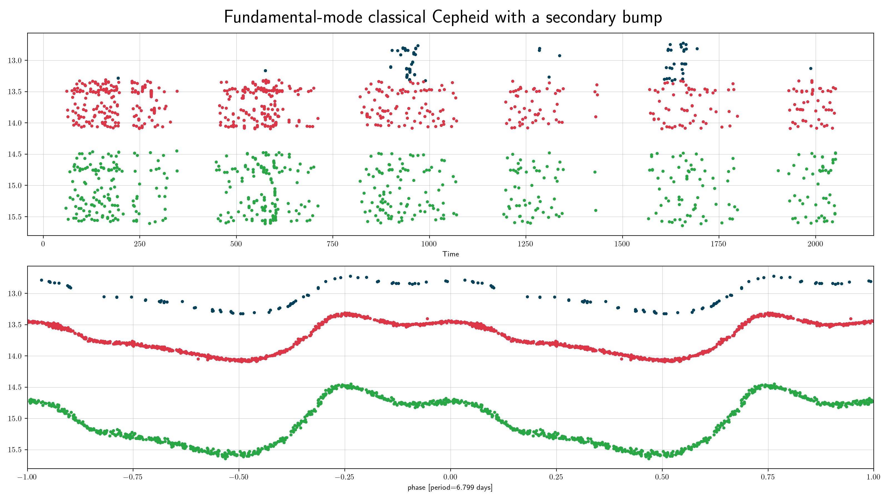
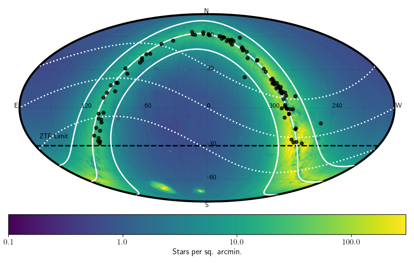

Classical Cepheids (ceph)¶
Classical Cepheids are young, bright (100-10,000 solar luminosities) supergiant stars that pulsate with periods of 1 to 100 days (typically several days). They are located in the main instability strip in the H-R diagram. Cepheids follow a famous pulsation period-luminosity relation, allowing the absolute magnitude of a Cepheid, and thus its distance, to be inferred from the pulsation period. Thus, Cepheids are used to measure distances to nearby galaxies.
Classification and numbers¶
Supertypes
variable
periodic
pulsator
Occurrence rate: rare, about 103 expected in ZTF data, mostly in the Galactic plane and in M31
ZTF light curves¶



Description¶
Fundamental-mode Cepheids are easy to recognise by their distinctive sawtooth light curve shape (with a rapid rise to maximum light and a slower decline) and period range (from 1 to 100 days). A secondary bump may be seen in the light curves of some Cepheids with periods in the range 6-20 days. Cepheids pulsating in the first overtone have lower amplitudes and more symmetric light curves than fundamental-mode Cepheids. Their periods (in the Milky Way) range from 0.24 to 8 days. The lower period limit is arbitrary since there is no natural boundary between first-overtone Cepheids and delta Scuti stars. Some Cepheids pulsate both in the fundamental mode and first overtone, the period ratio ranges from 0.68 to 0.77.
Light curve characteristics¶
periodic variable
period range: 1-100 days (fundamental-mode pulsators), 0.24-8 days (first-overtone pulsators)
amplitude: moderate amplitude (~0.3 to 0.8 mag)
light curve shape:
smooth, sawtooth variations (blue/green filters show stronger sawtooth pattern); steep rise and slow decay
Classical Cepheids with pulsation periods 6-20 days may have a secondary bump
Other characteristics and selection methods¶
intrinsic Cepheids colors: Bp-Rp = 0.8 – 2.0 mag, but as these stars are located near the Galactic plane, the reddening may be significant
absolute magnitude: -6<G<-2
located close to the Galactic plane (within ~10 degrees)


References and further reading:¶
Soszynski, I. et al. (2008) The Optical Gravitational Lensing Experiment. The OGLE-III Catalog of Variable Stars. I. Classical Cepheids in the Large Magellanic Cloud
Udalski, A. et al. (2018) OGLE Collection of Galactic Cepheids
Rimoldini, L. et al. (2019) Gaia Data Release 2. All-sky classification of high-amplitude pulsating stars
Skowron, D. et al. (2020) A three-dimensional map of the Milky Way using classical Cepheid variable stars